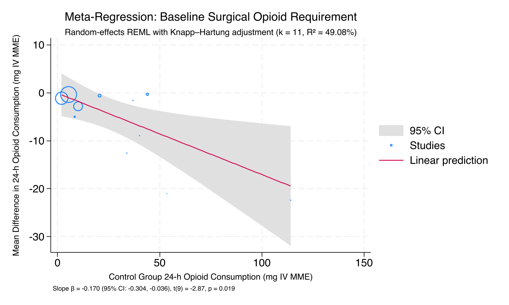

Background & Rationale
john_ryan.nual_mendoza@med.lu.se), Siv Katrin Peters, Dr. Carina Sjöberg, Dr. Pether Jildenstål • Lund University / Region Skåne
Postoperative opioid consumption remains a cornerstone of acute pain management, yet carries dose-dependent risks including respiratory depression, postoperative nausea and vomiting (PONV), ileus, cognitive dysfunction, and the potential for persistent opioid use. Transcutaneous electrical acupoint stimulation (TEAS) and electroacupuncture (EA) have been proposed as non-pharmacological adjuncts that modulate endogenous opioid peptide release (β-endorphin, enkephalins, dynorphins) through frequency-dependent mechanisms, potentially reducing cumulative postoperative opioid requirements without compromising analgesic adequacy.
Despite over two decades of randomized controlled trials, prior systematic reviews have been limited by pooling heterogeneous modalities, lacking sham controls, and failing to prespecify clinically meaningful thresholds. This review addresses these gaps by implementing rigorous modality stratification (TEAS vs EA), requiring sham/placebo controls for primary analyses, and pre-registering a clinically important opioid-sparing threshold.
PICOS Framework
| Element | Inclusion | Exclusion |
|---|---|---|
| Population | Adult surgical patients (≥ 18 years) undergoing any elective or emergency surgical procedure under general, regional, or combined anaesthesia | Paediatric (< 18 y), non-surgical (chronic pain, obstetric labour, ICU sedation), or animal models |
| Intervention | TEAS: Non-invasive transcutaneous electrical stimulation applied at recognized acupoints via surface electrodes EA: Invasive needle electroacupuncture at acupoints with electrical current |
Manual acupuncture (no electrical current), moxibustion, acupressure, laser acupoint stimulation, TENS at non-acupoints |
| Comparator | Primary: Sham/placebo TEAS or sham EA (identical setup, subthreshold or no current) Supportive: Usual care / no stimulation (open-label) |
Active drug comparators only (e.g., TEAS vs nerve block without a no-stimulation control) |
| Outcomes | Primary Analgesic Domain (Dual Timepoints): Cumulative postoperative opioid consumption (mg IV morphine equivalents) at 24 h (acute window) and 48 h (extended durability window) Secondary: Pain intensity (VAS/NRS), PONV, rescue analgesia, time to first flatus, QoR-40/15, PCA demands |
Studies reporting no quantifiable postoperative outcome within 0–72 hours |
| Study Design | Randomized controlled trials (RCTs), published in English or Chinese, with full-text availability | Non-randomized studies, observational cohorts, case reports, conference abstracts without full data, reviews |
Research Objectives & Dashboard Navigation
Each objective links to the corresponding Results section where its analysis is presented.
Quantify 24-h (acute) & 48-h (extended) opioid-sparing effects of TEAS and EA
Dual-timepoint co-primary synthesis of cumulative 0–24 h (acute) and 0–48 h (extended durability) opioid consumption (mg IV MME), stratified by modality. REML random-effects with Knapp–Hartung adjustment and 95% prediction intervals.
Evaluate postoperative pain intensity at rest and during movement at ~24 h
VAS/NRS 0–10 continuous mean difference. Essential for confirming that opioid sparing does not come at the cost of unrelieved pain.
Identify protocol moderators via prespecified subgroup & Stata meta-regression
Random-effects REML meta-regression exploring baseline surgical opioid demand (p=0.019, R²=49.1%), publication year (p=0.029, R²=82.8%), and modality confounding.
Determine clinical meaningfulness against prespecified thresholds
≥ 10 mg IV MME with pain non-inferiority ≤ +1.0 VAS (sensitivity: ≥ 8 mg, ≥ 30% relative, ≥ 5 mg).
Supportive syntheses and additional clinical endpoints
PONV (RR), time to first flatus (hours), PCA pump demands, rescue analgesia (RR), intraoperative remifentanil, QoR-40/15, length of stay, and sleep quality.
Assess certainty of evidence using RoB 2 and GRADE
Cochrane Risk of Bias 2 across all 5 domains. GRADE Summary of Findings with downgrade assessment for risk of bias, inconsistency, indirectness, imprecision, and publication bias.
Verified Evidence Synthesis Summary (StataNow 19.5 SE Validated)
Executed with restricted maximum likelihood (REML) and Hartung–Knapp standard errors on defensible, audited study sets:
Surgical Specialties Distribution (63 Trials)
Methodological Architecture & Design Separation
PRISMA 2020 Flow Diagram
Live Study Selection Process from Covidence Extraction Audit
- Embase (Elsevier.com)1,928 (37.8%)
- Cochrane CENTRAL1,698 (33.3%)
- PubMed (MEDLINE)1,009 (19.8%)
- CINAHL Ultimate465 (9.1%)
- Duplicate records removed by Covidence1,651
- Duplicate records removed manually1
- Marked ineligible by automation tools508
- Wrong outcomes (no 24h opioid/pain)122 (75.8%)
- Publication language (non-Eng/Chin)12 (7.5%)
- Wrong intervention (manual/moxibustion)9 (5.6%)
- Wrong setting (chronic / non-surgical)9 (5.6%)
- Wrong comparator (active drug only)3 (1.9%)
- Study not retrieved2 (1.2%)
- Wrong patient population (pediatric/animal)2 (1.2%)
- Abstract only (no full report)1 (0.6%)
- Wrong study design (non-RCT)1 (0.6%)
• TEAS (Surface Electrodes): 49 RCTs
• EA (Acupuncture Needles): 14 RCTs
• Sham-Controlled (Double-Blind): 44 RCTs
• Usual Care / Open-Label: 19 RCTs
• 100% Audited against Source PDFs
• 60 Studies with targeted Author Contacts
Bibliographic Search Strategies & Concept Architecture
Multi-Database Search Syntax, Boolean Operators, and Retrieval Statistics
Search Concept Map & Intersecting Facets
| Domain Facet | Controlled Descriptors (MeSH / Emtree / CINAHL) | Key Natural Language Textwords (Title/Abstract/Keywords) |
|---|---|---|
| Intervention: TEAS Non-invasive surface acupoint stimulation |
"Transcutaneous Electric Nerve Stimulation"[Mesh] AND "Acupuncture Points"[Mesh]; 'transcutaneous electrical nerve stimulation'/exp AND ('acupuncture'/exp OR 'acupuncture point'/exp); MH "Transcutaneous Electric Nerve Stimulation" AND MH "Acupuncture Points" | TEAS, TAES, "transcutaneous electrical acupoint stimulation", "transcutaneous electric acupoint stimulation", "transcutaneous acupoint electrical stimulation", "electroacupoint stimulation", "acupuncture-like TENS" |
| Intervention: EA Invasive needle electroacupuncture |
"Electroacupuncture"[Mesh]; 'electroacupuncture'/exp; MH "Electroacupuncture" | electroacupunctur*, electro-acupunctur*, "electro acupuncture", "electric acupuncture", "electrical acupuncture" |
| Population: Surgical Perioperative surgical patients under GA |
"Surgical Procedures, Operative"[Mesh]; "Anesthesia"[Mesh]; 'surgery'/exp; 'anesthesia'/exp; MH "Surgery, Operative+"; MH "Anesthesia+"; MH "Perioperative Care+" | surg*, operat*, perioperat*, peri-operat*, intraoperat*, intra-operat*, postoperat*, post-operat*, preoperat*, anesthe*, anaesthe* |
| Study Design: RCT Filter Validated methodological trial filters |
pt "randomized controlled trial"; pt "controlled clinical trial"; 'randomized controlled trial'/exp; 'controlled clinical trial'/de; MH "Randomized Controlled Trials+" | randomized, randomised, placebo, randomly, "double-blind", "single-blind", trial, "intermethod comparison" |
Study Characteristics & STRICTA Parameters Explorer
| Study Key | Modality | Comparator | Surgical Category | Acupoint Formula | Frequency | Sample Size (N) | RoB 2 | Actions |
|---|
Cochrane Risk of Bias 2 (RoB 2) Traffic Light Studio
| Study Identifier | D1: Randomization | D2: Deviations | D3: Missing Data | D4: Measurement | D5: Selection | Overall RoB | Signaling Rationale |
|---|
Dynamic Interactive Forest Plot
| Inc | Study Identifier | Comparison | Intervention Mean ± SD (N) | Control Mean ± SD (N) | Mean Difference [95% CI] | Weight | Forest Plot [95% CI & Prediction] |
|---|
Clinical Importance & Trade-Off Studio (Objective 4)
Evaluating whether 0–24h Opioid Reduction achieves the prespecified PROSPERO threshold (≥ 10 mg IV MME) without clinically important worsening of postoperative pain (≤ +1.0 VAS margin; upper 95% CI examined).
StataNow 19.5 SE Consensus Synthesis & Forest Plots Hub
Locked Protocol Synthesis Standard: In accordance with our PROSPERO protocol, TEAS and electroacupuncture (EA) are never combined into a single grand pooled estimate. Analyses are strictly stratified by modality. Primary comparisons evaluate TEAS versus credible sham TEAS and EA versus sham/control EA. Between-study variance is estimated using restricted maximum likelihood (REML) with Knapp–Hartung confidence intervals and 95% prediction intervals.
Section 2A: Co-Primary Acute Window — Cumulative 0–24h Opioid Sparing (k = 11 RCTs, N = 945)
Executed in StataNow 19.5 SE via meta summarize, random(reml) se(kh) predinterval. Modalities and reporting strata rigorously tested.
Consensus Acute Window: 0–24h Opioid Consumption
Alternative Model Estimates & Estimator Sensitivity
TEAS vs Sham TEAS
Alternative Model Estimates & Estimator Sensitivity
EA vs Control / Sham
Alternative Model Estimates & Estimator Sensitivity
Secondary Clinical Endpoints
Section 2B: Co-Primary Extended Durability Window — Cumulative 0–48h Opioid Sparing (IV MME mg)
Rigorous co-primary random-effects meta-analysis (REML + Hartung–Knapp adjustment) executed in StataNow 19.5 SE for trials reporting cumulative 48-hour systemic opioid requirements.
TEAS Stratum (0–48h)
EA Stratum (0–48h)
All 5 Trials (0–48h)
48-h PCA Volume Trials
StataNow 19.5 SE Forest Plot Gallery
Generated directly from StataNow 19.5 SE via meta forestplot for audited primary (k=11) and secondary outcomes. Click any plot to view or download high-resolution figure.
📊 How to Read this Forest Plot
- Square/Marker: The estimated treatment effect for each study. Marker area reflects its statistical weight in the random-effects meta-analysis.
- Horizontal Line: 95% confidence interval for each study, showing uncertainty around the study estimate.
- Diamond: The pooled average treatment effect. The center indicates the point estimate and lateral tips represent the 95% confidence interval.
- Vertical Dashed Line (0 or 1): The line of no effect. For mean differences (MD), values to the left of 0 favor TEAS/EA (reduced opioid consumption or pain). For risk ratios (RR), values to the left of 1.0 favor TEAS/EA (lower complication incidence).
- Prediction Interval: The dashed/extended bracket representing the estimated range of true effects that could plausibly occur in a future study or comparable clinical setting.
Cumulative 24-h Opioid Sparing (IV MME mg): All 11 Trials

Standardized Mean Difference (Hedges' g): All 11 Trials

Cumulative 0–48h Opioid Sparing (IV MME mg): Modality Stratified
Standardized Mean Difference (Hedges' g): 0–48h Opioid Consumption
Postoperative Pain Intensity at ~24h (VAS 0–10)

Gastrointestinal Recovery: Time to First Flatus (Hours)

Postoperative Nausea & Vomiting (PONV) Risk Ratio

📐 Mathematical Derivations & Stata Calculation Breakdown
Full algebraic formulas, parametric conversions, and exact numerical matrix weights used by StataNow 19.5 SE to pool all 11 trials into the primary outcome synthesis.
🔬 Part 1: Mathematical Derivations for the 5 Conditional Studies
Var(XY) = σ_X²·σ_Y² + μ_X²·σ_Y² + μ_Y²·σ_X²
MME = Dose_sufentanil × 0.1 mg/µg
📊 Part 2: StataNow 19.5 SE Random-Effects Weighting Matrix (All 11 Trials, N = 945)
| Study & Year | Modality / Comparator | Data Status | Sample ($n_1 / n_2$) | Mean Diff $y_i$ | Std Error $SE_i$ | Variance $v_i$ | Fixed Weight $w_i$ | Stata REML Weight (%) | Stata DL Weight (%) | Hedges' $g$ (SE) |
|---|---|---|---|---|---|---|---|---|---|---|
| Chen 1998 | TEAS vs Sham | Direct | 25 / 25 | −21.000 mg | 6.103 mg | 37.247 | 0.0268 | 5.13% | 0.73% | −0.958 (0.299) |
| El-Rakshy 2009 | EA vs Control | Direct | 42 / 53 | −1.600 mg | 3.719 mg | 13.831 | 0.0723 | 7.87% | 1.84% | −0.088 (0.207) |
| Seevaunnamtum 2016 | TEAS vs Sham | Direct | 32 / 32 | −12.560 mg | 4.389 mg | 19.263 | 0.0519 | 7.00% | 1.36% | −0.707 (0.258) |
| Chen 2020 | TEAS vs Sham | Direct | 40 / 40 | −2.819 mg | 0.178 mg | 0.032 | 31.562 | 11.48% | 18.34% | −3.505 (0.356) |
| Yang 2024 | TEAS vs Sham | Direct | 90 / 90 | −0.300 mg | 0.716 mg | 0.513 | 1.951 | 11.30% | 13.98% | −0.062 (0.149) |
| He 2026 (JIS) | TEAS vs Sham | Direct | 80 / 79 | −0.600 mg | 0.578 mg | 0.334 | 2.993 | 11.36% | 15.33% | −0.164 (0.159) |
| Sim 2002 | EA vs Sham | Derived | 30 / 30 | −8.920 mg | 4.870 mg | 23.717 | 0.0422 | 6.42% | 1.12% | −0.467 (0.262) |
| Coura 2011 | EA vs Sham | Derived | 13 / 9 | −22.400 mg | 5.670 mg | 32.149 | 0.0311 | 5.55% | 0.84% | −1.553 (0.493) |
| Chen 2015 (Hyp) | TEAS vs Sham | Derived | 29 / 30 | −1.122 mg | 0.128 mg | 0.016 | 61.035 | 11.48% | 18.53% | −2.256 (0.333) |
| Chen 2015 (Thy) | TEAS vs Sham | Derived | 41 / 42 | −5.000 mg | 1.234 mg | 1.523 | 0.657 | 10.94% | 9.32% | −0.874 (0.230) |
| Zhang 2025 | TEAS vs Sham | Derived | 45 / 48 | −0.326 mg | 0.100 mg | 0.010 | 100.000 | 11.49% | 18.61% | −0.670 (0.213) |
| StataNow 19.5 SE Random-Effects Summary (k = 11, N = 945) | REML: −5.035 mg | SE: 2.128 mg | Cochran Q = 197.30 (p < 0.0001) | 100.0% (τ² = 30.01) | 100.0% (τ² = 1.51) | g = −0.994 (p = 0.010) | ||||
Statistical Deferral of Multivariable Meta-Regression
The 10:1 Rule for Meta-Regression: Cochrane Handbook Section 10.11.4.1 stipulates that meta-regression models require a minimum of 10 independent studies per candidate predictor/covariate to avoid severe overfitting and spurious ecological associations.
StataNow 19.5 SE Consensus Execution Log
Loading Stata 19.5 execution stream...
StataNow 19.5 SE Meta-Regression & Moderator Studio
Investigating sources of between-study clinical and statistical heterogeneity (τ²) across the 11 audited primary trials. Evaluates whether the magnitude of opioid sparing is moderated by baseline surgical opioid demand, intervention modality (TEAS vs EA), or secular temporal changes (publication year).
- Univariable Meta-Regression (1 predictor): 11 / 1 = 11.0 studies/covariate → The analysis meets a commonly used minimum study-count rule of thumb for exploratory univariable meta-regression, but statistical power may remain limited and results should be considered exploratory or hypothesis-generating.
- Constrained Bivariable Meta-Regression (2 predictors): 11 / 2 = 5.5 studies/covariate → Exploratory / hypothesis-generating only. With Knapp–Hartung adjustment, degrees of freedom are restricted to df = 11 − 2 − 1 = 8.
- Higher-Order Multivariable Models (≥ 3 predictors): Severely vulnerable to overfitting, collinearity (ecological fallacy), and inflated Type I error. Reported strictly for sensitivity context.
Meta-Regression Slopes & Study Precision Weights
Circle size represents the random-effects meta-analytic weight (1 / [v_i + τ²]) of each trial. The solid line represents the fitted meta-regression slope.

Comprehensive Moderator & Clinical Parameter Matrix (k = 11 Primary RCTs)
Formal empirical and methodological audit of candidate moderators requested for exploration across the 11 analyzable primary trials.
| Moderator Domain | Variable Type | Empirical Distribution | Meta-Regression β [95% CI] | Model Test (Knapp–Hartung) | Variance Explained (R²) | Methodological Assessment | Clinical & Analytical Interpretation |
|---|---|---|---|---|---|---|---|
| Baseline Opioid Demand | Continuous Clinical | Control Mean: 5.3 to 114.1 mg | −0.170 [−0.304, −0.036] | t(9) = −2.87, p = 0.0186 | 49.08% | Primary Moderator | Statistically robust. Sparing increases by 1.70 mg IV MME per 10 mg baseline demand. |
| Publication Year | Continuous Temporal | Year: 1998 to 2026 | +0.471 [+0.062, +0.881] | t(9) = +2.60, p = 0.0287 | 82.81% | Secondary Moderator | Later publication year was associated with smaller estimated opioid-sparing effects (decreasing by ~0.47 mg/year), potentially reflecting secular multimodal ERAS adoption. |
| Modality (EA vs TEAS) | Binary Intervention | TEAS (k = 8) vs EA (k = 3) | −5.98 mg (Univar) • +1.49 mg (Multivar) | t(8) = +0.29, p = 0.781 | 38.79% (Model) | Multivariable (df=8) | The apparent modality association was attenuated after adjustment for baseline surgical opioid demand (drops to p=0.781). |
| Stimulation Timing | Categorical Protocol | Preoperative (k=5) vs Multi-phase (k=5) vs Intraop (k=1) | +3.102 [−7.006, +13.211] | t(9) = +0.69, p = 0.505 | 0.00% | Subgroup Preferred | Timing alone does not account for residual variance; pre-incisional and multi-phase strategies perform similarly. |
| Electrical Frequency | Categorical Protocol | 2/100 Hz DD (k=7) vs Fixed 100/2 Hz (k=4) | +3.223 [−7.560, +14.006] | t(9) = +0.68, p = 0.516 | 0.00% | Subgroup Preferred | Dense-disperse alternating current and fixed frequencies show comparable 24h opioid sparing. |
| Number of Sessions | Discrete Protocol | 100% Single-Session (k=11/11) | Dropped by Stata due to zero variance (constant across trials) | All 11 trials applied 1 session; impossible to test dose-response via meta-regression. | |||
| Patient Sex (% Female) | Demographic (Aggregate) | Range: 22.1% to 100.0% female | −0.013 [−0.191, +0.165] | t(9) = −0.16, p = 0.8746 | 0.00% | Ecological Fallacy | No evidence of an association between the study-level proportion of female participants and treatment effect was detected. This does not establish equivalent treatment effects between individual women and men. |
| Patient Age & BMI | Demographic (Aggregate) | Study mean age: 45 to 58 yrs | Clustered study means • Individual Participant Data (IPD) required | Study-level averages cannot evaluate patient-level age/weight effects due to Simpson's paradox. | |||
| Acupoint Selection | Anatomical Prescription | Bundled somatic points (LI4, PC6, ST36, SP6) | High collinearity • Multi-point co-administration | Acupoints are always prescribed as bundles; isolating single acupoint efficacy in aggregate data is impossible. | |||
In meta-regression, demographic variables like patient age, BMI, and sex are reported as study-level aggregates (e.g. trial mean age = 52.4). Meta-regression cannot assess whether an individual 75-year-old achieves greater sparing than a 25-year-old. Testing aggregate means risks the Ecological Fallacy (Simpson's Paradox), where cross-study associations contradict true patient-level effects. True evaluation of age, BMI, and comorbidities strictly requires Individual Participant Data (IPD) meta-analysis.
In accordance with STRICTA guidelines, acupoints in perioperative anesthesia trials are virtually never tested in isolation. They are delivered as standard multi-channel somatic prescriptions combining upper-limb segmental points (LI4 Hegu, PC6 Neiguan) and lower-limb visceral points (ST36 Zusanli, SP6 Sanyinjiao). Because trials share the same point combinations, statistical collinearity prevents isolating the independent contribution of any single acupoint in study-level meta-regression.
Expected Opioid Sparing Estimator (Stata REML Multivariable Model)
Simulate predicted 24-hour opioid reduction based on baseline surgical pain intensity and intervention modality:
MD = 0.0204 − 0.1876 × (Baseline Demand) + 1.4895 × (EA).
In surgical procedures requiring 40 mg baseline IV morphine equivalents, TEAS is expected to produce an average reduction of 7.48 mg IV MME.
Verbatim Execution Log: Meta-Regression & Moderator Models
Loading Stata meta-regression execution stream...
Author Outreach & Data Clarification Center
Following our comprehensive 4-way cross-audit, 60 formal author inquiries have been cataloged with tailored email drafts, corresponding author emails, and institutional affiliations. Reaching out to corresponding authors is our highest-yield ongoing activity to expand the primary opioid synthesis and verify secondary pain and PONV metrics.
Primary 24-h Opioid Consumption Missing
Secondary Pain SDs, Vomiting Counts & GI Metrics
Cohort Overlap & Metric Verification
🔬 Author Data Confirmation & "What-If" Sensitivity Simulator
Active Author Contact Roster & Targeted Inquiries (60 Trials)
Click "📋 Copy Email" to copy the ready-to-send draft letter directly to your clipboard, or click the email address to open your mail client.
| Study Identifier | Priority | Target Data Requested | Corresponding Author & Institution | Contact Email | Action |
|---|
📐 Opioid Conversion Methodology & Literature Reference Hub
Transparent mathematical formulations, clinical pharmacology equianalgesic conversion factors, and peer-reviewed literature citations underpinning all converted values in this systematic review.
| Opioid Drug & Route | Conversion Factor to IV MME | Equianalgesic Dose (10 mg IV Morphine) | Clinical Pharmacology & Receptor Rationale | Foundational Guidelines & References |
|---|---|---|---|---|
| Morphine (IV) | 1.0 mg / mg | 10.0 mg | Reference standard opioid comparator. Pure $\mu$-opioid receptor agonist. | CDC 2022 / ANZCA APM:SE 2020 |
| Sufentanil (IV) | 1.0 mg MME / µg (1000:1) | 10.0 µg (0.01 mg) | Highly potent lipophilic $\mu$-agonist; ~1000-fold more potent than parenteral morphine in acute surgical analgesia. Widely used in Chinese PCIA pumps. | Treillet 2018 / Macintyre 2020 / Knotkova 2012 |
| Fentanyl (IV) | 0.10 mg MME / µg (100:1) | 100.0 µg (0.10 mg) | Rapid-onset synthetic $\mu$-agonist; clinically accepted 100:1 equianalgesic ratio with IV morphine in postoperative PCA regimens. | CDC 2022 / ANZCA 2020 / Nielsen 2016 |
| Remifentanil (IV) | 0.10 mg MME / µg (100:1) | 100.0 µg (0.10 mg) | Ultra-short-acting esterase-metabolized $\mu$-agonist; evaluated in intraoperative consumption endpoints ($1\,\mu\text{g} = 0.1\text{ mg}$ IV MME). | Macintyre 2020 / ASA Practice Guidelines 2012 |
| Hydromorphone (IV) | 6.67 mg MME / mg | 1.5 mg | Semisynthetic hydrogenated ketone of morphine; 5–7 times more potent than parenteral morphine (standard conversion $1.5\text{ mg} \approx 10\text{ mg}$ IV morphine). | CDC 2022 / Knotkova 2012 / ANZCA 2020 |
| Oxycodone (IV) | 1.0 mg MME / mg | 10.0 mg | Parenteral formulation administered in European/Asian surgical trials; equipotent to intravenous morphine on a milligram-for-milligram basis. | Treillet 2018 / ANZCA 2020 |
| Dezocine (IV) | 1.0 mg MME / mg | 10.0 mg | Synthetic opioid partial $\mu$-agonist / $\kappa$-antagonist widely used in China; clinical trials establish near 1:1 equianalgesic potency to IV morphine. | Chinese Pain Society Consensus / Liu 2020 |
| Pethidine / Meperidine (IV) | 0.10–0.13 mg MME / mg | 75.0 – 100.0 mg | Synthetic opioid; 75–100 mg parenteral pethidine provides analgesia equivalent to 10 mg parenteral morphine. Converted at $0.10\text{ mg MME/mg}$. | CDC 2022 / ANZCA 2020 / Knotkova 2012 |
| Tramadol (IV) | 0.10 mg MME / mg | 100.0 mg | Atypical weak $\mu$-agonist with SNRI dual action; 100 mg IV tramadol is clinically equivalent to approximately 10 mg IV morphine. | ANZCA 2020 / Treillet 2018 |
| Butorphanol (IV) | 5.0 mg MME / mg | 2.0 mg | Mixed agonist-antagonist; 2 mg IV butorphanol is clinically equianalgesic to 10 mg parenteral morphine. | ANZCA 2020 / Knotkova 2012 |
1. Estimating Mean from Median & IQR (Wan et al. 2014 & Luo et al. 2018)
When randomized trials report non-parametric summaries [Median $m$, 25th percentile $q_1$, 75th percentile $q_3$] for sample size $n$, Cochrane Handbook Section 6.5.2 recommends estimating sample mean using the Luo optimal weighting or Wan formula:
$\bar{X} \approx \frac{q_1 + m + q_3}{3}$
Luo et al. (2018) Optimal Weights:
$\bar{X} \approx w_1 q_1 + w_2 m + w_3 q_3$
where $w_1 = w_3 = 0.5 - \frac{0.7}{n}$, $w_2 = \frac{1.4}{n}$ (minimizes mean squared error for skewed data).
2. Estimating Standard Deviation from IQR (Shi et al. 2020)
Sample variance is derived by scaling the Interquartile Range ($q_3 - q_1$) by normal distribution quantiles adjusted for finite sample size $n$:
$S \approx \frac{q_3 - q_1}{2\Phi^{-1}\left(\frac{0.75n - 0.125}{n + 0.25}\right)}$
Standard Cochrane Approximation:
$S \approx \frac{q_3 - q_1}{1.35}$
(Used when $n \ge 50$; exactly equal to the distance between 25th and 75th standard normal percentiles).
Patient-Controlled Analgesia (PCA) Liquid Volumetric Protocol
Several trials report PCA pump consumption as delivered solution volume (in mL) or number of bolus compressions rather than mass of drug. In accordance with ASA Acute Pain Guidelines (2012), delivered doses are derived using the verified reservoir concentration:
$\text{Total Opioid Mass} = V_{\text{total}} \times C_{\text{solution}}$
Example: $45.7\text{ mL}$ PCIA solution with $1\,\mu\text{g/mL}$ sufentanil
$= 45.7\,\mu\text{g sufentanil} \times 1.0\text{ (IV MME factor)} = \mathbf{45.7\text{ mg IV MME}}$.
Demand Bolus & Lockout Verification
When compressions are reported without cumulative volume, total delivered dose accounts for successful boluses plus basal background rate:
$\text{Demand Mass} = N_{\text{delivered}} \times V_{\text{bolus}} \times C_{\text{solution}}$
Total 24-h Consumption:
$\text{Total} = \text{Demand Mass} + (24\text{ hours} \times \text{Basal Rate} \times C_{\text{solution}})$.
Select drug and enter 24h consumption to see exact IV Morphine Milligram Equivalents.
Convert non-parametric five-number summary to parametric Mean ± SD.
Wan X, Wang W, Liu J, Tong T. (2014)
Estimating the sample mean and standard deviation from the sample size, median, range and/or interquartile range.
DOI: 10.1186/1471-2288-14-135 ↗
Luo D, Wan X, Liu J, Tong T. (2018)
Optimally estimating the sample mean from the sample size, median, mid-range, and/or mid-quartile range.
DOI: 10.1177/0962280216669183 ↗
Shi J, Luo D, Weng H, et al. (2020)
Optimally estimating the sample standard deviation from the five-number summary.
DOI: 10.1002/jrsm.1429 ↗
Higgins JPT, Thomas J, et al. (eds) (2023)
Cochrane Handbook for Systematic Reviews of Interventions, Version 6.4. Chapter 6: Choosing effect measures.
training.cochrane.org/handbook ↗
Dowell D, Ragan KR, Jones CM, et al. (2022)
CDC Clinical Practice Guideline for Prescribing Opioids for Pain — United States, 2022.
DOI: 10.15585/mmwr.rr7103a1 ↗
Macintyre PE, Schug SA, Scott DA, et al. (2020)
Acute Pain Management: Scientific Evidence (5th edition). Australian and New Zealand College of Anaesthetists.
anzca.edu.au ↗
Treillet E, Liborio-Amancio L, et al. (2018)
Practical issues in calculating equianalgesic doses for opioids: a systematic review and clinical consensus.
DOI: 10.1007/s00520-017-3850-9 ↗
ASA Task Force on Acute Pain (2012)
Practice guidelines for acute pain management in the perioperative setting: an updated report.
DOI: 10.1097/ALN.0b013e31823c1030 ↗
GRADE Summary of Findings (SoF) Table (Objective 7)
Evaluated according to GRADE Working Group criteria: Risk of bias, Inconsistency, Indirectness, Imprecision, and Publication bias.
| Outcome Endpoint | Anticipated Absolute Effect | Pooled Effect (95% CI) | Participants (Studies) | Certainty (GRADE) | Downgrade Assessment & Footnotes |
|---|
Data Export & Statistical Pipeline Downloads
Export the active filtered dataset containing study-level effect sizes, sample sizes, and RoB 2 classifications for independent statistical auditing, or download the master Stata 19.5 SE replication suite.